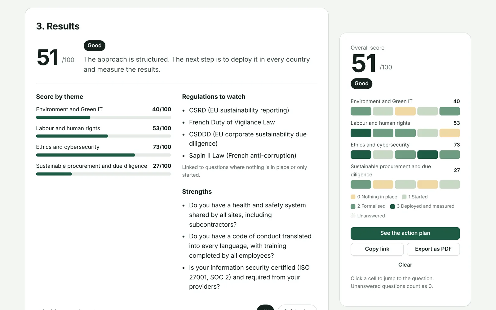

For IT and supply chain companies
CSR pre-assessment
20 questions on environment, labour, ethics and procurement. The tool gives a score per theme, the regulations that apply to your regions and a prioritised action plan, with an 85 item checklist and a short PDF report.
What it shows: how I turn CSR frameworks (EcoVadis, ISO 27001, CSRD) into concrete next steps.